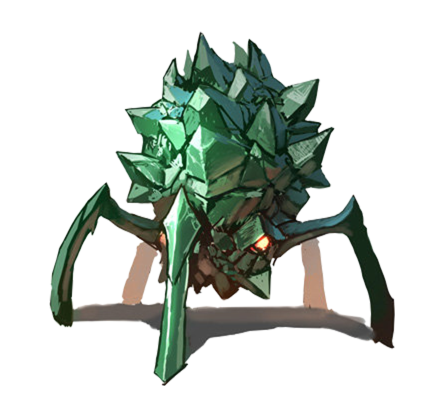

A spherical X'Tal, both stubborn and high in numbers, that can be produced in a number of ways. Artificially, they're produced by using the minerals drifting within a planet's ocean, and naturally, they're the result of when a persistent piece of material or biomatter stays on a larger X'Tal's body for far too long. They're akin to parasites and bottom-feeders with they way they latch onto any moving surface within their space, but with host X'Tal, they may form a symbiotic relationship and follow their every command.
